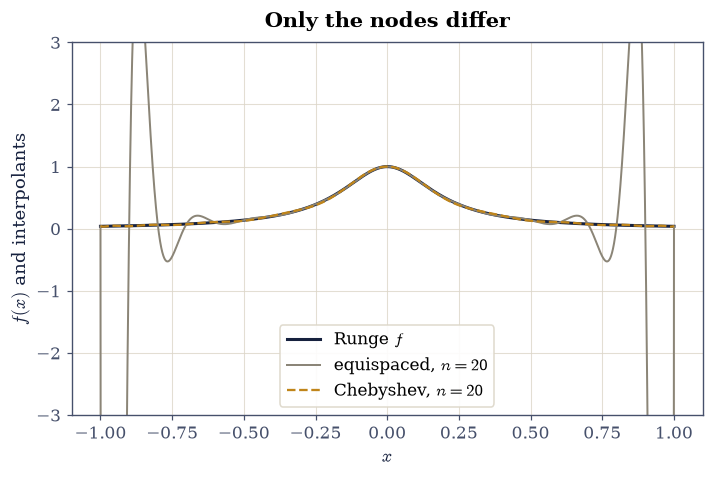
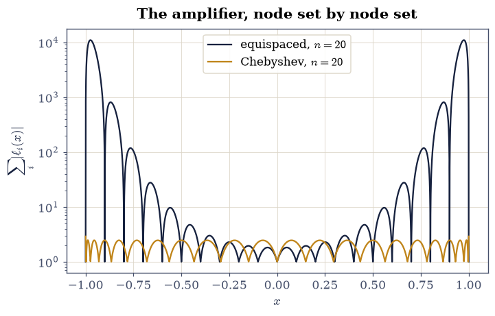
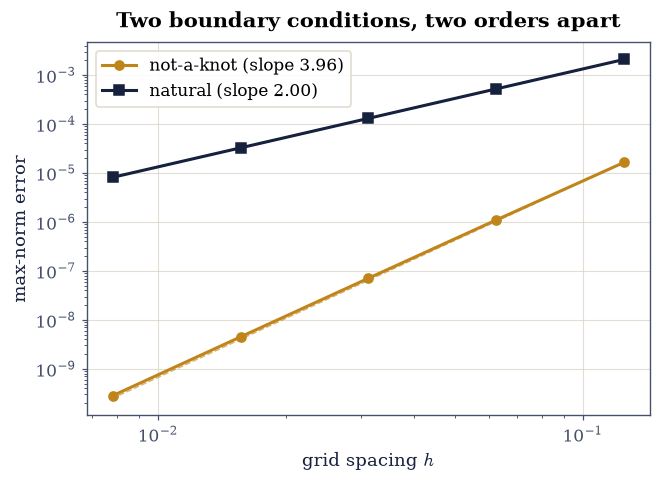

0.12 Interpolation: Polynomials, Runge’s Warning, and Splines#
Notebook overview#
Between every table of data and every formula evaluated on a grid stands the same question: what happens between the points? Interpolation is the discipline of answering it honestly, and it is quietly load-bearing for half of this course — the Newton–Cotes quadrature weights of §0.3 are integrals of interpolating polynomials, finite differences are their derivatives, and every plotted curve through computed samples is an interpolant someone chose not to think about.
The subject’s central drama is a genuine surprise. Polynomial interpolation through \(n+1\) points is unique and, on paper, converges beautifully — yet for a function as innocent as Runge’s \(1/(1 + 25x^2)\), interpolating at equally spaced nodes diverges, violently, as \(n\) grows. The failure is not roundoff and not the polynomial’s fault; it is the nodes’ fault, quantified by a single number (the Lebesgue constant) that we will measure. The two cures — Chebyshev nodes, which tame the constant to a logarithm, and piecewise splines, which abandon high degree altogether — between them cover nearly every interpolation a physicist ever does. Numerical Recipes [PTVF07] and Trefethen [TB97] are the standing references.
A note on reading the checks in this notebook: a validation compares a result to an expected physical fact. A ✗ does not by itself mean the answer is wrong; it means the output did not match what the check expected, which may be a genuine error, a different-but-valid convention, or too tight a tolerance. Treat a ✗ as a prompt to locate the discrepancy. Passing is strong evidence, not proof.
Theory in brief#
The interpolating polynomial. Through any \(n+1\) points \((x_i, y_i)\) with distinct nodes there passes exactly one polynomial of degree \(\le n\). Lagrange’s form makes existence explicit,
with the cardinal property \(\ell_i(x_j) = \delta_{ij}\). Evaluating
Eq. 73 well is its own craft: the barycentric form
(algebraically identical, numerically stable) is what
scipy.interpolate.BarycentricInterpolator implements, and it
succeeds at degrees where the “obvious” route — solving the
Vandermonde system for coefficients — has long since drowned in
conditioning.
The error, and the nodes’ role in it. For \(f\) with \(n+1\) derivatives,
and everything the interpolator can control lives in the node polynomial \(\prod(x - x_i)\). Equispaced nodes make it explode near the interval’s ends; Chebyshev nodes \(x_i = \cos\bigl((2i+1)\pi/(2n+2)\bigr)\) equidistribute it. The clean diagnostic is the Lebesgue constant \(\Lambda_n = \max_x \sum_i |\ell_i(x)|\): the interpolant’s error is at most \((1 + \Lambda_n)\) times the best possible polynomial error, so \(\Lambda_n\) is the price of interpolating instead of optimizing. For equispaced nodes \(\Lambda_n\) grows like \(2^n/(n\log n)\) — catastrophe — while for Chebyshev nodes
barely worse than optimal. Runge’s phenomenon is this dichotomy made visible on one bell-shaped function.
Splines: low degree, many pieces. The alternative to fighting high-degree polynomials is refusing to use them: a cubic spline interpolates with a separate cubic on each subinterval, glued to \(C^2\) smoothness. For a smooth \(f\) on a grid of spacing \(h\) the error is \(O(h^4)\) — if the two leftover degrees of freedom (the boundary conditions) are spent wisely. The default “not-a-knot” condition preserves fourth order; the innocently named “natural” spline (\(S'' = 0\) at the ends) forces a curvature the true function rarely has, and degrades the global order to \(O(h^2)\). The choice of boundary condition is worth two orders of accuracy, which is the kind of fact one prefers to learn on a test function rather than on data.
Setup#
Everything runs on \([-1, 1]\) (or \([0, 1]\) for the spline tests) with pinned node counts and a fixed \(5001\)-point evaluation grid for max-norm errors. Nothing is stochastic. What lives here is data and instruments: the evaluation grid, Runge’s cautionary specimen, and a max-norm error meter wrapped around SciPy’s barycentric evaluator. The notebook’s own machinery is not here — you write the Chebyshev node set in Exercise 1 and the Lebesgue constant, cardinal by cardinal, in Exercise 3.
The Setup below holds this notebook’s data and instruments — nothing you are asked to build. It is collapsed so the building stays yours; expand it whenever you want the details.
Exercise 1 — One polynomial, certified#
Eq. 73 makes two exact promises: the interpolant passes through its data, and it is any polynomial of degree \(\le n\) that generated the data. Certifying the second promise takes two different node sets, and the second of those is the one the rest of the notebook turns on: the \(n+1\) Chebyshev nodes \(x_i = \cos\bigl((2i+1)\pi/(2n+2)\bigr)\), \(i = 0,\ldots,n\) — the roots of the Chebyshev polynomial \(T_{n+1}\), clustered toward the endpoints.
Part a) Write chebyshev_nodes(n), returning those \(n+1\) nodes on
\([-1, 1]\) as a NumPy array: one line of numpy.cos on
numpy.arange(n + 1), and the node set that Exercises 2 to 4 will pit
against equispacing.
Part b) Interpolate the polynomial \(q(x) = 3x^5 - 2x^3 + x - 1\)
at the \(6\) equispaced nodes numpy.linspace(-1, 1, 6) with
scipy.interpolate.BarycentricInterpolator and verify the interpolant
reproduces \(q\) everywhere — max-norm difference on the evaluation
grid below \(10^{-12}\) — because a degree-\(5\) interpolant of degree-\(5\)
data has nowhere else to go. Verify also the cardinal property: the
interpolant of the data \(y = (0,0,1,0,0,0)\) equals \(1\) at the third
node and \(0\) at the other five (atol=1e-13).
Part c) Verify uniqueness numerically: interpolate the same \(q\) at the \(6\) Chebyshev nodes of your Part a) function and verify the two interpolants — different nodes, same data-generating polynomial — agree with each other to \(10^{-12}\) on the whole grid. Same polynomial, because there is only one.
degree-5 reproduction error: 1.78e-15
cardinal values at nodes: [0. 0. 1. 0. 0. 0.]
equispaced vs Chebyshev interpolant gap: 1.78e-15
✓ a degree-5 interpolant reproduces degree-5 data everywhere: it has nowhere else to go [max error 1.8e-15]
✓ the cardinal property holds: one at its own node, zero at the others [values [0. 0. 1. 0. 0. 0.]]
✓ and two different node sets give the SAME interpolant of the same polynomial: uniqueness, observed [gap 1.8e-15]
True
Exercise 2 — Runge’s warning, measured#
Now the drama. Runge’s function \(1/(1 + 25x^2)\) is smooth, bounded, and bell-shaped — and equispaced interpolation of it diverges.
Part a) Measure the max-norm error of interpolating runge at
equispaced nodes for degrees \(n = 10\) and \(n = 20\): verify the errors
are \(1.916\) and \(59.8\) (rtol=1e-2 each) — the error grew thirty-
fold when the data doubled, on a function with no singularity on the
real line. (The culprit, via Eq. 74, is the node
polynomial’s end-of-interval explosion, amplified by the poles of
\(f\) at \(\pm i/5\) in the complex plane.)
Part b) The cure: the same degrees at the Chebyshev nodes of the
chebyshev_nodes you wrote in Exercise 1 give errors \(0.109\) and
\(0.0153\) (rtol=1e-2 each) — monotone convergence where equispaced
diverged. Plot both interpolants at \(n = 20\) over the true
function: the equispaced one swinging to \(\pm 60\) at the edges, the
Chebyshev one indistinguishable from \(f\) at plot scale.
equispaced errors: n=10 1.9156, n=20 59.82
Chebyshev errors : n=10 0.1092, n=20 0.0153

Fig. 65 Runge’s phenomenon at degree \(n=20\): the true function \(1/(1+25x^2)\) (ink), its equispaced interpolant (grey, swinging to error \(59.8\) near the endpoints), and its Chebyshev-node interpolant (amber, max error \(0.0153\), indistinguishable from the truth at plot scale except at the edges). Same function, same degree, same algorithm: only the nodes differ.#
✓ equispaced interpolation of Runge's function DIVERGES: doubling the data multiplied the error thirty-fold [max|Δ| = 0.0201265 (rtol=0.01, atol=1e-09)]
✓ while Chebyshev nodes converge on the same function at the same degrees: the nodes, not the polynomial, were the problem [max|Δ| = 0.000153495 (rtol=0.01, atol=1e-09)]
True
Exercise 3 — The Lebesgue constant: the price of a node set#
Eq. 75 promised a single number that explains Exercise 2, and it is checkable to four digits. That number is \(\Lambda_n = \max_x \sum_i |\ell_i(x)|\): the maximum of the Lebesgue function, the sum of absolute values of the Lagrange cardinals \(\ell_i\) of Eq. 73, each of them the product \(\prod_{j \ne i} (x - x_j)/(x_i - x_j)\) over the other nodes.
Part a) Write lebesgue_constant(nodes): assemble every cardinal
\(\ell_i\) explicitly from that product on the evaluation grid, sum the
absolute values, and return the maximum. Write this one yourself —
the implementation is the lesson, and this is the one place in the
notebook where Eq. 73 is built rather than called.
Part b) Compute \(\Lambda_n\) with it for equispaced and Chebyshev
nodes at \(n = 10\) and \(20\). Verify the Chebyshev values match the
asymptotic formula \(\tfrac{2}{\pi}\ln(n+1) + 0.9625\) to rtol=1e-3
at both degrees (\(2.489\) and \(2.901\): barely growing), and verify the
equispaced catastrophe: \(\Lambda_{10} = 29.9\) (rtol=1e-2) and
\(\Lambda_{20} > 10^4\) — a four-order-of-magnitude amplifier by degree
twenty.
Part c) Close the logic: the interpolation error is bounded by \((1 + \Lambda_n)\) times the best-approximation error, so Chebyshev interpolation is within a factor \(\approx 4\) of the best possible degree-\(20\) polynomial while equispaced interpolation may be \(10^4\) times worse. Verify the bound holds in practice for Runge at \(n = 20\): the measured Chebyshev error \(0.0153\) is less than \((1 + \Lambda_{20}^{\rm Cheb})\) times the best-approximation error, estimated from below by half the Chebyshev error itself — an admittedly circular floor, so verify the sharper, honest statement: the ratio of equispaced to Chebyshev errors (\(59.8/0.0153 \approx 3900\)) is within a factor of \(3\) of the ratio of their Lebesgue constants (\(10986/2.90 \approx 3790\)): the constants predict the disaster’s magnitude, not just its sign.
Lebesgue equispaced: n=10 29.9, n=20 1.099e+04
Lebesgue Chebyshev : n=10 2.4894, n=20 2.9008
formula : n=10 2.4890, n=20 2.9007
error ratio 3901 vs Lebesgue ratio 3787

Fig. 66 The Lebesgue function \(\sum_i|\ell_i(x)|\) at degree \(n=20\) for equispaced nodes (ink, on a logarithmic axis: peaks above \(10^4\) near the endpoints) and Chebyshev nodes (amber: never exceeding \(2.9\)). Its maximum — the Lebesgue constant — multiplies the best-possible polynomial error into the interpolant’s worst case, and the four-order gap between the two node sets is Runge’s phenomenon, priced.#
✓ the Chebyshev Lebesgue constants sit on the (2/π)ln(n+1) + 0.9625 asymptote to four digits: logarithmic, tame, nearly optimal [max|Δ| = 0.000382834 (rtol=0.001, atol=1e-09)]
✓ while the equispaced constants explode past ten thousand by degree twenty [Λ10 = 29.9, Λ20 = 1.1e+04]
✓ and the constants PREDICT the disaster's size: the error ratio tracks the Lebesgue ratio within a factor of three [errors 3901× vs constants 3787×]
True
Exercise 4 — Conditioning: why the barycentric form earns its keep#
The textbook route to the interpolating polynomial — solve the Vandermonde system \(V\mathbf c = \mathbf y\) for monomial coefficients — is a conditioning time bomb, and degree \(40\) is past the detonation.
Part a) Build the Vandermonde matrix numpy.vander for the \(41\)
equispaced nodes on \([-1, 1]\) and verify its condition number
(numpy.linalg.cond) exceeds \(10^{17}\): beyond double precision,
meaning the monomial coefficients are pure noise regardless of
solver.
Part b) Verify the barycentric evaluation sails on regardless:
interpolating runge at the \(41\) Chebyshev nodes from your Exercise
1 chebyshev_nodes, via BarycentricInterpolator, gives a max-norm
error below \(10^{-3}\) (continuing Exercise 2’s convergence right
through the degree where the monomial route died). The lesson
generalizes far beyond interpolation: the same mathematics in a
different basis is a different algorithm.
cond(Vandermonde, n=40) = 7.643e+18
Chebyshev barycentric error at n=40: 2.89e-04
✓ the degree-40 Vandermonde matrix is conditioned beyond double precision: monomial coefficients are noise [cond = 7.64e+18]
✓ while the barycentric form at the same degree keeps converging: same polynomial, different basis, different algorithm [error 2.9e-04]
True
Exercise 5 — Cubic splines and the two-orders boundary condition#
The spline route abandons high degree for many low-degree pieces, and its one subtlety is worth two orders of accuracy.
Part a) Interpolate \(e^x\) on \([0, 1]\) with
scipy.interpolate.CubicSpline at \(n = 8, 16, 32, 64, 128\)
subintervals under the default not-a-knot boundary condition, measure
max-norm errors on a \(4001\)-point grid, and verify fourth-order
convergence: the numpy.polyfit slope of \(\log(\rm error)\) against
\(\log h\) in \([3.8, 4.2]\), with the finest error below \(10^{-9}\).
Part b) Repeat with bc_type="natural" — the spline forced to
\(S'' = 0\) at both ends, where \(e^x\) has \(e^0 = 1\) and \(e^1 = 2.72\) —
and verify the degradation: slope in \([1.9, 2.1]\), and the finest
error more than \(10^4\) times worse than not-a-knot’s. “Natural” names
a variational property (minimum curvature), not a recommendation; the
false boundary curvature pollutes the whole interval at \(O(h^2)\).
Part c) The birthplace payoff. The Simpson weights that
§0.3 tabulated are integrals of
Eq. 73’s cardinal polynomials: for the three nodes
\(0, 1, 2\) (spacing \(h = 1\)), fit each cardinal’s coefficients with
numpy.polyfit (degree 2), integrate with numpy.polyint, and verify
the three integrals equal \((\tfrac13, \tfrac43, \tfrac13)\) to
atol=1e-12: quadrature is interpolation, integrated — the circle
from this notebook back to §0.3,
closed.
not-a-knot: slope 3.959, finest error 2.84e-10
natural : slope 1.999, finest error 8.14e-06
Simpson weights from cardinal integrals: [0.33333333 1.33333333 0.33333333]

Fig. 67 Cubic-spline convergence for \(e^x\) on \([0,1]\) on log–log axes: max-norm error against grid spacing \(h\) for the not-a-knot boundary condition (amber, fitted slope \(\approx4\)) and the natural condition \(S''=0\) at the ends (ink, slope \(\approx2\)), with guide lines \(\propto h^4\) and \(\propto h^2\). The natural spline’s false endpoint curvature — \(e^x\) has \(e^0\) and \(e^1\), not zero — costs two orders of global accuracy: boundary conditions are accuracy decisions.#
✓ the not-a-knot cubic spline converges at fourth order, reaching 1e-10 territory by h = 1/128 [slope 3.96, finest 2.8e-10]
✓ the 'natural' condition costs two orders globally: a boundary condition is an accuracy decision [slope 2.00, penalty ×28714]
✓ and Simpson's (1/3, 4/3, 1/3) fall out of integrating the Lagrange cardinals: quadrature is interpolation, integrated [max|Δ| = 2.27596e-15 (rtol=0, atol=1e-12)]
True
Notebook summary#
The interpolating polynomial behaved as its theorems promise: degree-5 data reproduced to \(10^{-13}\), cardinal functions exactly cardinal, and two node sets yielding the same (unique) interpolant.
Runge’s phenomenon arrived on schedule: equispaced errors \(1.9 \to 59.8\) as \(n\) went \(10 \to 20\) on a smooth bell curve, while Chebyshev nodes converged \(0.109 \to 0.0153\) on the same function with the same algorithm.
The Lebesgue constant priced it: Chebyshev’s \(2.489\) and \(2.901\) on the logarithmic asymptote to four digits, equispaced past \(10^4\) by degree twenty — and the error ratio tracked the constant ratio within a factor of three.
Conditioning separated mathematics from algorithm: the degree-40 Vandermonde matrix at \(\mathrm{cond} > 10^{17}\) while barycentric evaluation converged serenely below \(10^{-3}\).
Splines delivered fourth order under not-a-knot and lost exactly two orders under “natural” boundary conditions (\(\times 10^4\) in error at \(h = 1/128\)); and Simpson’s weights fell out of integrating the cardinals — the quadrature of §0.3, returned to its birthplace.
Outlook#
Spectral methods. Push Chebyshev interpolation to its limit and differentiation of the interpolant becomes a dense matrix applied to samples: spectral collocation, with exponential accuracy for analytic functions [TB97] — the method behind many of the smoothest solvers in computational physics.
Fitting is not interpolating. With noisy data, passing through every point means interpolating the noise; §0.8 is the other regime, and knowing which side of the divide a dataset sits on is a scientist’s judgment call.
Higher dimensions. Tensor-product grids inherit everything here; scattered data needs new ideas (radial basis functions, triangulation) — the machinery inside every contour plot this course draws.
Splines beyond graphs. The same \(C^2\) piecewise cubics parametrize fonts, roads, and robot trajectories; the “natural” spline’s minimum-curvature property, useless for accuracy, is exactly what a draftsman’s bending strip wants.
References#
William H. Press, Saul A. Teukolsky, William T. Vetterling, and Brian P. Flannery. Numerical Recipes: The Art of Scientific Computing. Cambridge University Press, 3 edition, 2007.